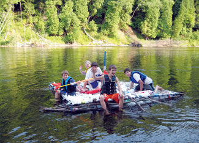

I teach environmental education classes to 10-to-14-year-old home-schooled kids. Last year, one group decided to study buoyancy with the goal of constructing a raft that would hold six of us. In addition, I challenged them to make it out of as many recycled materials as possible.
Their design included an 8-foot-by-10-foot platform held afloat by two basket-type pontoons containing plastic jugs (milk or laundry detergent). Based on their models, they calculated the length and circumference of the pontoons needed for adequate buoyancy to hold us afloat. First, they ventured into a nearby swamp and found a supply of thick grapevine. These were shaped into graduated circles to be used as the ribs in the pontoons. With the help of a dad, they harvested 10- to 14-foot willow saplings. These were stripped of branches and were fastened over the grapevine circles to create a “cage” for the plastic jugs. The pontoons were held together with plastic-coated wire salvaged from telephone cable.
Time was running out, so they decided to buy (rather than salvage) four 10-foot lengths of lightweight conduit for the platform frame and 100 yards of nylon rope to weave into the “deck.” The conduit was bolted together (bolts “salvaged” from a dad’s workshop) and squared off by lashing additional willow saplings across.
The nylon rope was tied to form a warp from bow to stern, then plastic shopping bags were tied end-to-end to create a long sash, which was woven across to form the weft.
After the first trial run, it was decided that they had failed to account for the weight of the raft in their flotation calculations, so additional flotation was added to the center of the raft by creating a flattened basket of old woven-wire fencing and filling it with plastic jugs.
The raft successfully glided down the Muskegon River near Newaygo, Mich., for a two-hour float. We even garnered the blessing of a bald eagle on our journey.
|
 REBECCA KIRK Whether you’re young or young at heart, you can have fun in the sun with a homemade raft. |
|
|